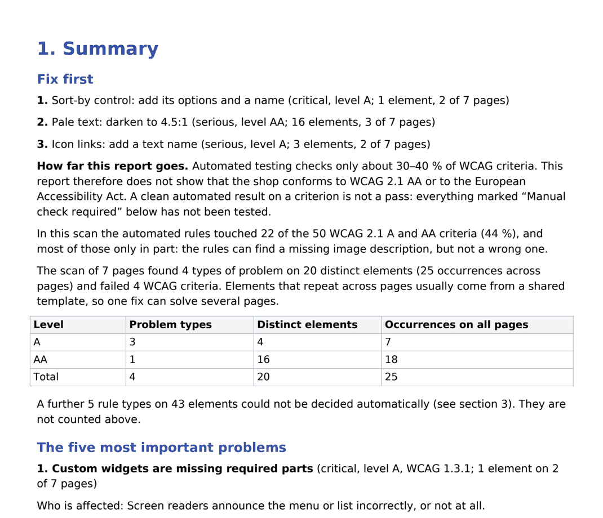

Is your online shop ready for the European Accessibility Act?
We scan your shop against WCAG 2.1 A and AA and send a PDF with every error found and how to fix it.
Get a free snapshot Free snapshot or full audit for 390 EUR: see pricing →
Who we are: a small independent service from Astana, Kazakhstan. No client reviews yet, so judge the work by the sample report. More
What the law means for your shop
The EAA has applied to e-commerce sites and online services in the EU since 28 June 2025. We run an automated scan of your shop against WCAG 2.1 A and AA, show what fails and how to fix it, and state plainly what was not tested. A scan cannot prove that your shop conforms, and we do not claim that it does.
Pricing
Free snapshot
0 EUR
- Automated WCAG 2.1 A and AA scan of 4 pages: home, category, product, cart
- PDF report with the main problems and their impact ratings
- Our target: 1 business day
Automated audit
390 EUR
- Up to 10 pages agreed with you: home, category, product, cart, search, contact, returns, account sign-in
- Report as PDF and Word, in English
- The five most important problems in plain language: who is affected and how to fix it
- Every problem found, with its level, impact, pages and up to three example elements
- An element repeated across pages is counted once, so you can see where one template fix helps
- A short “Fix first” list
- A result for each of the 50 WCAG 2.1 A and AA criteria, and the checks that still need a person
- Scripted keyboard pass on one page, the product page: Tab order, visible focus, suspected traps, skip links
- Delivered within 3 business days of receiving your payment
Prices exclude VAT where applicable. Payment by bank transfer against an invoice in EUR. See the terms of service.
What is checked, and what is not
How it works
- Send us your shop address. You receive a free snapshot with the most serious issues.
- Order the automated audit. We confirm the page list and send a quote with the price and the delivery date by email.
- Within 3 business days of receiving your payment you get the report, with the “Fix first” list and the manual checks still to do.
- Your developers fix the issues and arrange the manual checks.
Who we are
EAA Audit is a small independent service run from Astana, Kazakhstan. We hold no accessibility certification and have no client reviews yet. We use an AI service to help prepare reports; the privacy policy names it.
You can judge the work from our sample report (PDF, 11 pages): a real scan of 7 pages. The shop did not commission it and has not been contacted, and its identity has been removed. The PDF is not tagged for screen readers; write to us for a version you can read.
Get your free snapshot
Email us your shop address. We aim to reply within one business day with the snapshot PDF.